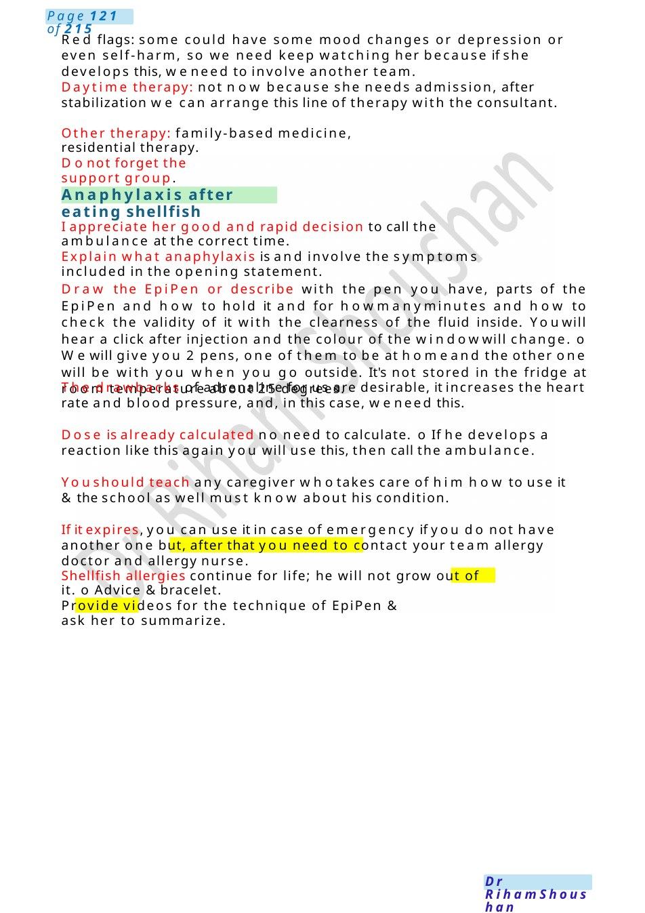
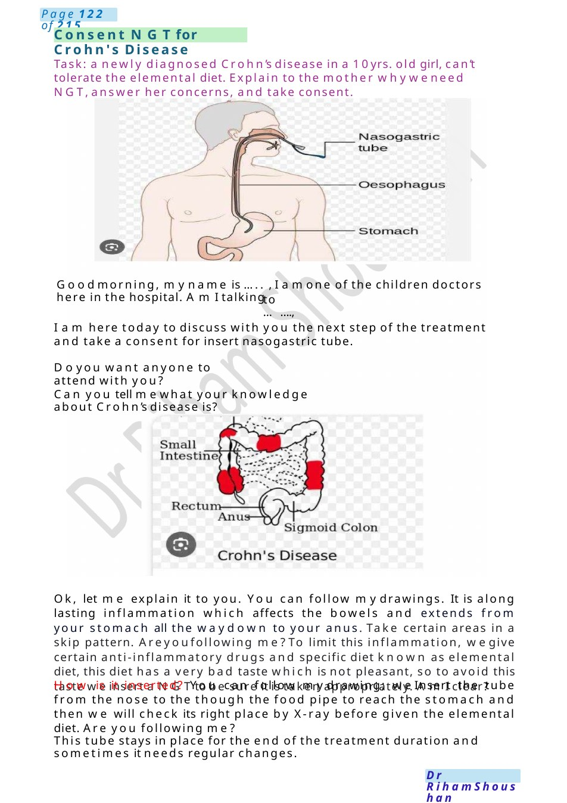

Anaphylaxis after eating shellfish
Red flags: some could have some mood changes or depression or even self-harm, so we need keep watching her because if she develops this, weneed to involve another team. Daytime therapy: not now because she needs admission, after stabilization we can arrange this line of therapy with the consultant.
Scenario Summary
Red flags: some could have some mood changes or depression or even self-harm, so we need keep watching her because if she develops this, weneed to involve another team. Daytime therapy: not now because she needs admission, after stabilization we can arrange this line of therapy with the consultant.
Full Original Scenario

Anaphylaxis after eating shellfish
Red flags: some could have some mood changes or depression or even self-harm, so we need keep watching her because if she develops this, weneed to involve another team.
Daytime therapy: not now because she needs admission, after stabilization we can arrange this line of therapy with the consultant.
Other therapy: family-based medicine, residential therapy.
Donot forget the support group.
I appreciate her good and rapid decision to call the ambulance at the correct time.
Explain what anaphylaxis is and involve the symptoms included in the opening statement.
Draw the Epi Pen or describe with the pen you have, parts of the Epi Pen and how to hold it and for howmanyminutes and how to check the validity of it with the clearness of the fluid inside. Youwill hear a click after injection and the colour of the windowwill change. o Wewill give you 2 pens, one of them to be at homeand the other one will be with you when you go outside. It's not stored in the fridge at room temperature about 25 degrees.
The drawbacks of adrenaline for us are desirable, it increases the heart rate and blood pressure, and, in this case, weneed this.
Dose is already calculated no need to calculate. o If he develops a reaction like this again you will use this, then call the ambulance.
Youshould teach any caregiver whotakes care of him how to use it &the school as well must know about his condition.
If it expires, you can use it in case of emergency if you do not have another one but, after that you need to contact your team allergy doctor and allergy nurse.
Shellfish allergies continue for life; he will not grow out of it. o Advice & bracelet.
Provide videos for the technique of Epi Pen & ask her to summarize.

Consent NGTfor Crohn's Disease
Task: a newly diagnosed Crohn’s disease in a 10yrs. old girl, can’t tolerate the elemental diet. Explain to the mother whyweneed NGT,answer her concerns, and take consent.
Goodmorning, myname is ..... , I amone of the children doctors here in the hospital. AmI talking
to .......,
I am here today to discuss with you the next step of the treatment and take a consent for insert nasogastric tube.
Doyou want anyone to attend with you?
Can you tell mewhat your knowledge about Crohn’s disease is?
Ok, let me explain it to you. You can follow mydrawings. It is along lasting inflammation which affects the bowels and extends from your stomach all the waydown to your anus. Take certain areas in a skip pattern. Areyoufollowing me?To limit this inflammation, wegive certain anti-inflammatory drugs and specific diet known as elemental diet, this diet has a very bad taste which is not pleasant, so to avoid this taste weinsert a NGTto be sure it is taken appropriately. AmI clear?
How is it inserted? You can follow mydrawing; we Insert the tube from the nose to the though the food pipe to reach the stomach and then we will check its right place by X-ray before given the elemental diet. Are you following me?
This tube stays in place for the end of the treatment duration and sometimes it needs regular changes.